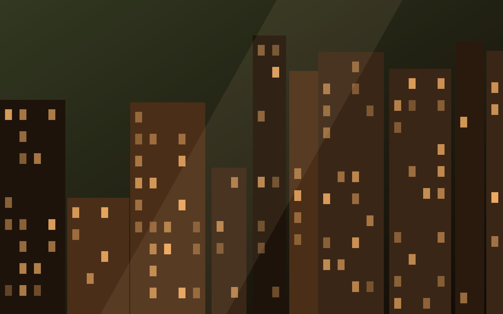
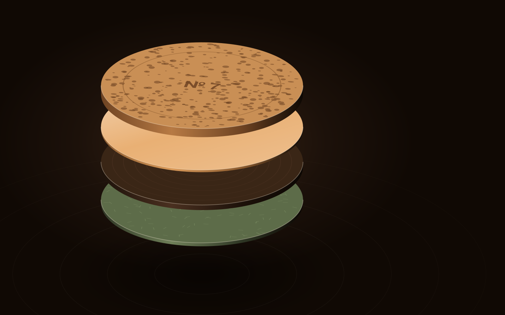

pele · deps css · mobile ok · custo baixo
Puxa quem quer.
Quando a pessoa arrasta, a faixa de cards faz translateX com inércia e snap, porque explorar é opcional — quem quiser, puxa.
rolha · diário de produção
Da casca à mesa, em seis quadros.

01 · matériaO grão, de perto. 
02 · macroMais perto: tem vida ali. 
03 · ateliêPrensa ao entardecer. 
04 · ruaA loja, da calçada. 
05 · testeCai, gira, pousa. 
06 · mesaOnde ela mora.
Mouse: arraste a faixa e solte — ela desliza e encaixa. Toque e trackpad: scroll nativo com scroll-snap. O scroll vertical da página nunca é sequestrado.
Usar
Features, depoimentos, portfólio curto: conteúdo que é bônus para quem explora. Seguro para landing porque o eixo Y continua livre.
Não usar
Junto de horizontal hijack (dois trilhos X). Para conteúdo obrigatório (o que ninguém arrastar, ninguém vê). Sem controles de teclado.
Reduced motion / sem GSAP
CSS + vanilla. Base é overflow-x com snap. Arrasto só com ponteiro fino; inércia só com .motion. Sem motion: solta e encaixa, sem deslizar.